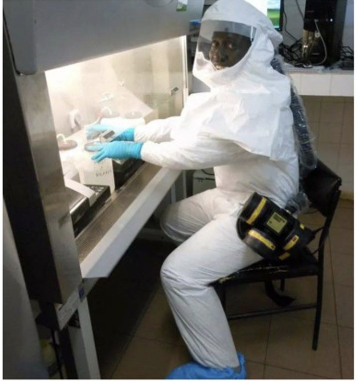

Responder · 2014
In the laboratory
When Ebola reached Kenema in May 2014, I was on the laboratory team that confirmed Sierra Leone's first case. We kept testing through the months that followed, under extreme, unimaginable conditions and with very few resources, while seeing many colleagues succumb to the disease.
Kenema Government Hospital VHF laboratory, 2014